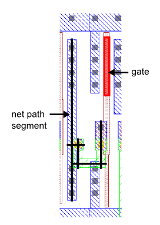

This check measures the path lengths of
nets connected to MOS gates along centerlines of complete polygons
on the first two layers of metal interconnect. Length is not measured
from via to via or via to contact, but along the entire lengths
of polygons. Corners and jogs are handled reasonably so lengths
are not counted twice at corners.
Figure 1 shows a MOS gate with
its associated net path on MET1 and MET2 layers. The centerlines
calculated by the layer derivation code are shown in black. The
total lengths of the path segments on a net are attached to the
associated gate polygons as properties.
Figure 1. Net Path
Connected to Gate
The rule file code in this example may require further refinement,
depending on the behavior of jogs and corners on the metal layers;
see “Comparison of Centerline and Effective Length Methods for Finding Path Length” for examples
of the derivation results with short stubs, non-uniform line widths,
and angled edges. If net paths include more than two metal layers,
you can add layers as needed by using the existing code as a template.
Try It!
 |
Calibre Advanced DRC (eqDRC) Tutorial and Example Kit
Go to this page on Support Center
to download the complete eKit.
This example is in the device_routing_checks/gate_net_path_length/centerline_method
example directory.
|
Procedure
- Ensure
code similar to the following exists in your rules for connecting
device gates up through the interconnect layer stack:
gate = POLY AND ACTIVE
CONNECT POLY gate
CONNECT MET1 POLY by CONT
CONNECT MET2 MET1 by VIA1
- Define
the following variables for the minimum length of a metal edge and
for the maximum width of a metal polygon to be considered as part
of a net path. Use values suitable for your design. Edges shorter
than cd_lineend are considered corners and handled separately.
// minimum edge length to consider for a line
VARIABLE cd_lineend 1
// maximum line width to consider
VARIABLE w_max 3
- Add the
following code as a macro for calculating polygon centerline lengths,
summing the lengths, and placing the length properties on the output
layers:
// gate is a MOS gate layer
// lay is a metal layer on a net
// lay_prop_nodal is an output layer with gate shapes
// and attached properties
// lay_prop is an output layer with lay shapes and properties
DMACRO PathLength gate lay lay_prop_nodal lay_prop {
// Get edges longer than the minimum
lay_edges = LENGTH lay > cd_lineend
// Get edges closer than max width of a wire
lay_int = INT lay_edges <= w_max OPPOSITE
// Get the centerlines between max width edges
lay_e = DFM COPY lay_int CENTERLINE
// Make regions out of max width edges
lay_e_reg = DFM COPY lay_int REGION
// Get corner regions of the wires
lay_corner = lay NOT lay_e_reg
// Get corner edges closer than max width of a wire
lay_corner_int = INT lay_corner <= w_max OPPOSITE
// Get the centerlines between max width edges on a corner
lay_c = DFM COPY lay_corner_int CENTERLINE
// Attach corner length properties to the input layer.
// px=0 and py=0 are expression chains, or fall-through rules,
// in case of evaluation errors
lay_c_prop = DFM PROPERTY lay lay_c OVERLAP MULTI
[ px = SUM(LENGTHXP(lay_c)) ] [ px = 0 ]
[ py = SUM(LENGTHYP(lay_c)) ] [ py = 0 ]
[ pathlength_corner = PROPERTY_REF(px)/2 + PROPERTY_REF(py)/2 ]
// Attach edge length properties to the input layer
lay_e_prop = DFM PROPERTY lay lay_e OVERLAP MULTI
[ pathlength_edge = SUM(LENGTH(lay_e)) ]
[ pathlength_edge = 0 ]
// Sum the corner and edge length properties on the input layer
lay_prop = DFM PROPERTY lay lay_c_prop lay_e_prop OVERLAP
ABUT ALSO MULTI
[ plc = SUM(PROPERTY(lay_c_prop,pathlength_corner)) ]
[ ple = PROPERTY(lay_e_prop,pathlength_edge) ]
[ pl = PROPERTY_REF(plc) + PROPERTY_REF(ple) ]
// Attach length and netID properties to gates
lay_prop_nodal = DFM PROPERTY gate lay_prop NODAL MULTI
[ PathLength = PROPERTY(lay_prop,pl) ]
[ Netname = NETID(gate) ]
}
- Add this
code to identify the MET1 and MET2 shapes on nets attached to gates,
and pass those layers to the macro from Step 3. Then sum the
path length properties on the gate polygons and attach the sum as
a new property PathLength_M1M2.
// Find metal layers on same net as gate polygon
M1 = NET AREA RATIO MET1 gate [!!AREA(gate)] == 1
M2 = NET AREA RATIO MET2 gate [!!AREA(gate)] == 1
// Call a macro to generate the derived layers PL_M1 and PL_M2,
// which contain the path length property PathLength for the metal
// layers connected to each gate
CMACRO PathLength gate M1 PL_M1
CMACRO PathLength gate M2 PL_M2
// Sum the lengths of M1 and M2 shapes on the same net as gate.
// Do not generate output if M2 shapes are not part of the path.
// Use this layer as an input for calculating path lengths on MET3
// if needed.
PL_M1M2 = DFM PROPERTY gate PL_M1 PL_M2 OVERLAP MULTI
[ PathLength_M1M2 = (PROPERTY(PL_M2,PathLength) == 0) ? 0 :
PROPERTY(PL_M1,PathLength) + PROPERTY(PL_M2,PathLength) ] > 0
[Netname = NETPROPERTY(PL_M1,"Netname",1)]
- Output
the results.
path_length {
DFM RDB PL_M1M2 "eqdrc.rdb" CHECKNAME "%_l_"
CELL SPACE ALL CELLS
}
- If debug
output is desired, comment out the DRC Unselect Check statement
to run the PL1_dbg and centerlines_dbg checks. These checks can
be used to verify the output of the preceding code.
DRC UNSELECT CHECK PL1_dbg centerlines_dbg
PL1_dbg {
@ show gates connected to M1 and M2.
@ show whole chains in nar_dbg.rdb.
NET AREA RATIO PL_M1M2 M1 M2 > 0 RDB "nar_dbg.rdb"
BY LAYER PL_M1M2 M1 M2
}
// draw centerlines of polygons involved in net paths
DMACRO centerlines L {
lay_edges = LENGTH L > cd_lineend
lay_int = INT lay_edges <= w_max OPPOSITE
DFM COPY lay_int CENTERLINE
lay_e_reg = DFM COPY lay_int REGION
lay_corner = L NOT lay_e_reg
lay_corner_int = INT lay_corner <= w_max OPPOSITE
DFM COPY lay_corner_int CENTERLINE
}
centerlines_dbg {
@ show polygon centerlines, which are the basis for
@ calculating the path lengths
CMACRO centerlines M1
CMACRO centerlines M2
}
Results
Open the eqdrc.rdb file in Calibre RVE to view the
path length property PathLength_M1M2 for each gate. Choose to view the results
in table format.
If debug output was produced, open the nar_dbg.rdb database
and the standard DRC results database. The standard DRC results
database contains the output of the centerlines_dbg check.